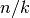
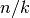
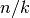
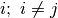
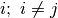
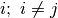

VEGA (script)¶
Se implementa la técnica M.O.E.A conocida como V.E.G.A. (Vector Evaluated Genetic
Algorithm ó Algoritmo Genético de Vectores Evaluados).
La forma de proceder del algoritmo es la siguiente:
1.- Se crea la Población Padre (de tamaño  ).
).
).2.- Tomando en cuenta las  funciones objetivo y la Población Padre, se crean subpoblaciones de tamaño  cada una, si este número llega a ser irracional se pueden hacer ajustes con respecto de la distribución de los Individuos.
funciones objetivo y la Población Padre, se crean subpoblaciones de tamaño  cada una, si este número llega a ser irracional se pueden hacer ajustes con respecto de la distribución de los Individuos.
funciones objetivo y la Población Padre, se crean subpoblaciones de tamaño  cada una, si este número llega a ser irracional se pueden hacer ajustes con respecto de la distribución de los Individuos.3.- Por cada subpoblación, se aplica la técnica de Selección y obtienen los Individuos, terminado esto se deben unificar todos los seleccionados de nuevo en una súper Población.
4.- Con la súper Población del paso 3, se crea a la población Hija, la cual pasará a convertirse en la la nueva Población Padre.
5.- Se repiten los pasos 2 a 4 hasta haber alcanzado el número de generaciones (iteraciones) límite.
Como se puede apreciar es una implementación muy sencilla de optimización multiobjetivo,
sin embargo el inconveniente que tiene es la fácil pérdida de material genético valioso.
Lo anterior significa que un Individuo que en una generación previa era el mejor para una
función objetivo  al momento de ser separado y seleccionado en una subpoblación
al momento de ser separado y seleccionado en una subpoblación  (y por ende analizado bajo la función objetivo ) puede ser muy malo en calidad y por tanto no ser seleccionado;
perdiéndose la ganancia genética hasta el momento obtenida para la función objetivo .
(y por ende analizado bajo la función objetivo ) puede ser muy malo en calidad y por tanto no ser seleccionado;
perdiéndose la ganancia genética hasta el momento obtenida para la función objetivo .
al momento de ser separado y seleccionado en una subpoblación
(y por ende analizado bajo la función objetivo ) puede ser muy malo en calidad y por tanto no ser seleccionado;
perdiéndose la ganancia genética hasta el momento obtenida para la función objetivo .Por ello es que se puede decir que V.E.G.A. genera soluciones promedio que destacan con una calidad media
para todas las funciones objetivo.
Finalmente hay que comentar que para este algoritmo no se requiere aplicar un Ranking específico, no obstante,
se ha decidido utilizar el de Fonseca & Flemming (véase Model/Community/Community.py) pues es el más sencillo
de implementar.
-
create_subpopulations(comunidad, main_population)¶ Método que divide a la Población principal en subpoblaciones de acuerdo al número de funciones objetivo.
Parameters: - comunidad (Instance) – Una instancia de Community para poder crear poblaciones..
- main_population (Instance) – La Población que será dividida.
Returns: Una lista con las subpoblaciones (de tipo Population).
Return type: List
-
execute_moea(execution_task_count, generations_queue, generations, population_size, vector_functions, vector_variables, available_expressions, number_of_decimals, community_instance, algorithm_parameters, representation_instance, representation_parameters, fitness_instance, fitness_parameters, sharing_function_instance, sharing_function_parameters, selection_instance, selection_parameters, crossover_instance, crossover_parameters, mutation_instance, mutation_parameters)¶ De acuerdo a la información proporcionada con anterioridad, se implementa el método que representa a la técnica M.O.E.A. conocida como V.E.G.A. (Vector Evaluated Genetic Algorithm ó Algoritmo Genético de Vectores Evaluados).